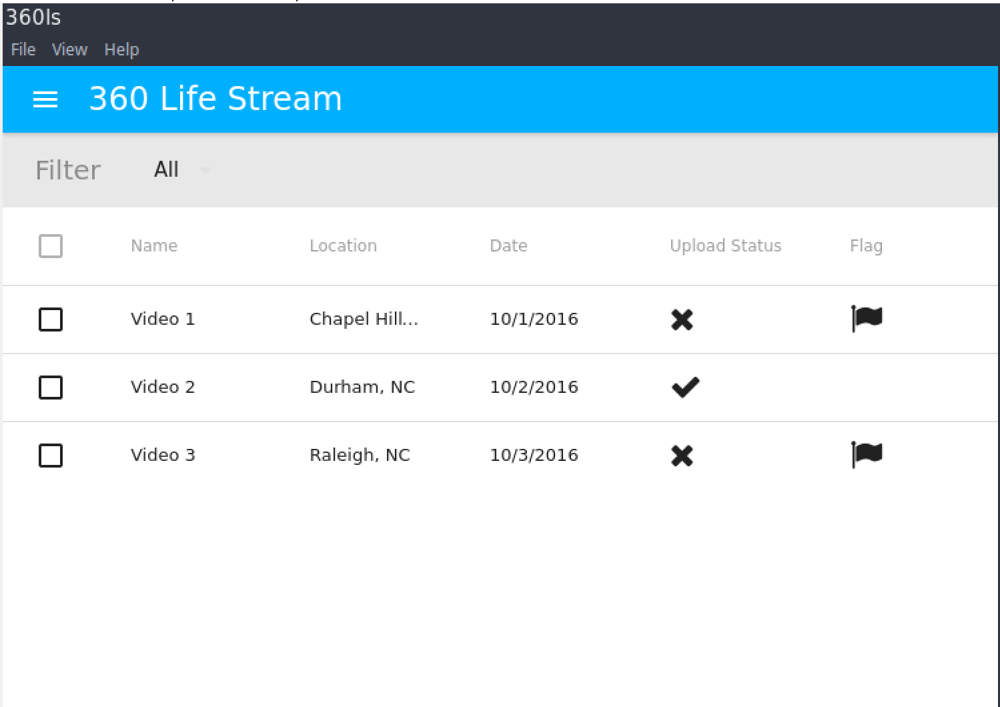
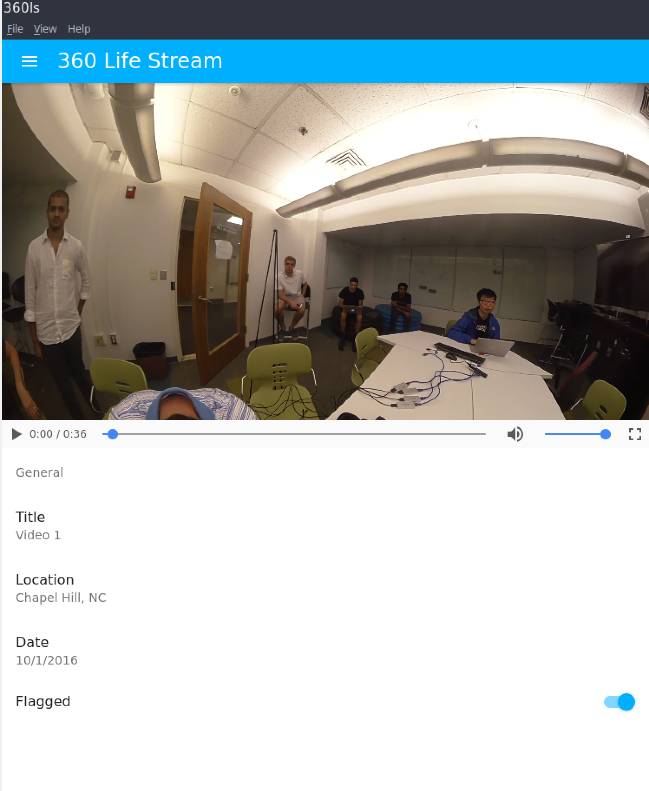

Functional Specification - Sprint 3
This portion of the website highlights the functional specification for the third development sprint. This functional specification includes use cases, requirements, and interfaces targeted and achieved during that sprint.
Use Cases
Use Cases Targeted
On-box Application
- Display a Stitched Video (use case of program to enable watching live video)
- Take video input from four camera streams, correct distortion, and stitch it into one video
- Convert that stitched video into multiple encodings of a 360 degree video
- Send 360 degree video to server to interact with wowza streaming service
- Correct distortion on videos
- Stream Video (use case of program to enable streamed video in on-box and web applications)
- Send stitched video to a server for storage
- Live stream stitched video from server storage and live device stitched footage
- Watch Live Video
- See the situation around the car from a live on-latency feed on the in-car box.
- See live video in a simple player in the web application
Use Cases Realized
On-box Application
- Display a Stitched Video (use case of program to enable watching live video)
- Take video input from four camera streams, correct_distortion, and stitch it into one stream (Super close.)
- Take video and image input from four local sources and stitch together
- Send 360 degree video to server to interact with wowza streaming service
- Stream Video (use case of program to enable streamed video in on-box and web applications)
- Send stitched video to hosted Wowza platform.
- Live stream stitched video from Wowza to web player
Requirements
Requirements Targeted
At the beginning of Sprint 3, we prioritized our requirements for the sprint as follows (with prioritization representing order of approach, not necessarily in order of project value):
Priority 1
- The Box
- Stitch 4 videos together and stream them to Wowza
- Completed stitching script for local and camera inputs.
- Set up hardware to process 4 video streams for consumption in the stitching script
- Create electron box application for handling incoming Wowza streams.
- Set up a file system to store videos locally
- Improve stitching algorithm to work well with 4 live video streams, fix distortion, and use cubemap if necessary
- Stitch 4 videos together and stream them to Wowza
Priority 2
- The Box
- Handle flexible stitching of invalid stream inputs.
- Server-side Implementation
- Get Django application up and running with Wowza streaming to React-enable frontend.
Requirements Realized
After completion of Sprint 3, we were able to complete the following requirements. We got very close to completing all of the requirements we needed to complete.
Priority 1
- The Box
- Stitch 4 videos together and stream them to Wowza
- Completed stitching script for local and camera inputs.
- Set up hardware to process 4 video streams for consumption in the stitching script
- Create electron box application for handling incoming Wowza streams.
- Set up a file system to store videos locally
- Improve stitching algorithm to work well with 4 live video streams, fix distortion, and use cubemap if necessary (Got much closer)
- Stitch 4 videos together and stream them to Wowza
Interfaces
After improving the project website and upgrading the stitching cli, we also added significant functionality to the desktop application. Here are a few example views.  